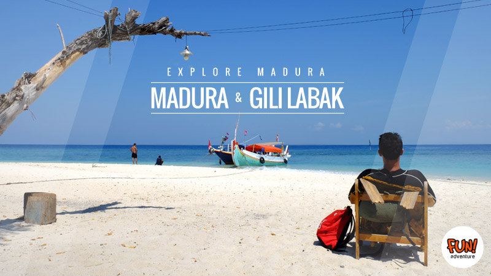
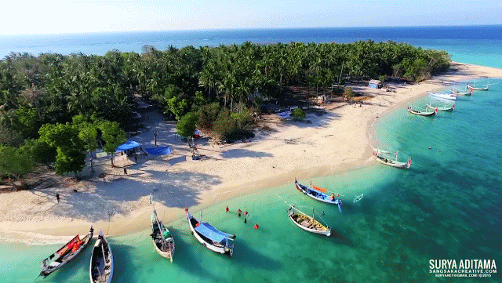

PANTAI GILI LABEK


Gili Labak Madura adalah pulau kecil yang mempunyai pasir putih, biru laut dan desiran ombak yang tenang. Ternyata yang mempunyai Gili bukan hanya Lombok, di Propinsi Jawa Timur tepatnya di Kabupaten Sumenep, Madura mempunyai beberapa Gili. Salah satunya adalah Gili Labak, pulau yang berada paling ujung timur pulau Madura dan tempat wisata di Jawa Timur ini belum banyak orang yang mengetahuinya sehingga pulau ini jarang dikunjungi oleh para wisatawan.
Sedikit para wisatawan yang tahu kalo sumenep madura memiliki pulau cantik nan jelita. Nama pulau ini dulunya adalah pulau tikus. Karena dulunya tempat ini adalah sarang tikus. Karena keindahan pulau ini melebihi nama aslinya (pulau tikus), Pulau ini diganti namanya menjadi Pulau Gili Labak, yang lebih enak disebut dengan dialek bahasa madura.
Pulau ini dapat ditempuh kurang lebih 2 jam dari pelabuhan kalianget, Pelabuhan paling ujung timur pulau madura. Letak Pulau ini cukup tersembunyi bahkan di atlas yang beli di toko pun tidak menampakkan pulau ini dí peta jawa timur. Luas Pulaunya yang hanya selapangan sepakbola sehingga membutuhkan skala lebih besar untuk muncul di peta.
Bentangan pasir putih dan lautan biru dengan ombak yang landai menjadikan Pulau Gili ini yang sangat layak untuk dikunjungi. Mempunyai pasir putih halus serta Sekitar 50 meter sebelum berlabuh di bibir pantai akan disambut dengan beningya air laut membuat anda bisa menikmati gugusan terumbu karang yang sangat indah. Pulau Kecil ini menjadi salah satu tempat favorit bagi yang hobi snorkling ataupun diving karena Tempat Wisata Sumenep ini mempunyai titik titik terumbu karang dan biota laut yang cukup beragam. Tetapi untuk menikmati hobi snorkling tersebut disarankan untuk membawa sendiri alatnya, karena disana belum ada yang menyewakan alat tersebut.
Gili Labak yang dahulu orang menyebutnya dengan Pulau Tikus mempunyai luas sekitar 5 hektar dan dapat dikelilingi dengan berjalan kaki kurang lebih 30 menit ini dihuni sekitar 35 kepala keluarga. Untuk penunjang fasilitas di Panta Gili Madura ini masih tergolong kurang. Seperti keterbatasan air bersih yang memang belum ada sumber air tawar di pulau tersebut, listrik yang hanya menyala di malam hari, belum adanya penginapan ataupun warung makanan. Jadi kalau menginginkan menginap, anda bisa menginap di rumah warga atau berkemah dipinggir pantai dan bawalah kebutuhan makanan selama berada di Gili Labak.